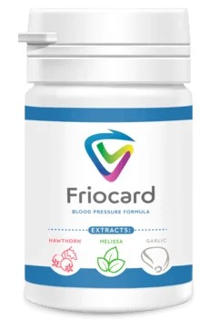
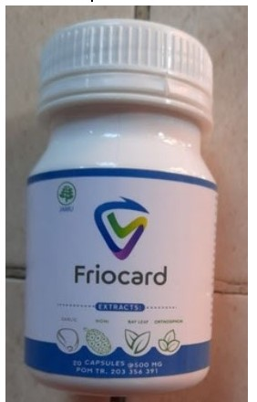
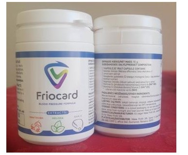
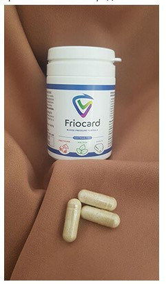
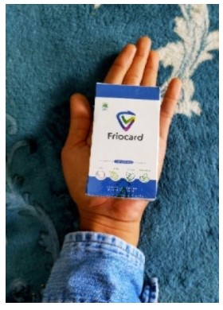

Il numero uno nella cardiologia in Italia spiega perché l'ipertensione uccide l'89% dei pazienti nel sonno
Più di cinquecento mila attacchi di cuore in un anno! Come prevenire la morte dovuta ai picchi di pressione grazie ad un rimedio disponibile per tutti - intervista con il Dott. Maurizio Tusa
RiferimentoDott. Maurizio Tusa
Il dottore Tusa si è laureato con lode in Medicina e Chirurgia presso l'Università degli Studi di Milano. Specializzato in Cardiologia a Milano e Fisiopatologia Respiratoria a Pavia, il dottore Tusa vanta numerose esperienze cliniche in differenti strutture ospedaliere nazionali ed internazionali.
Dal 2015 è Responsabile del Laboratorio di Ecocardiografia Clinica ed Interventistica, Cardiologia Clinica, presso I.R.C.C.S. Policlinico San Donato.
Gli attacchi di cuore e gli ictus dovuti alla pressione causano quasi il 70% di tutte le morti nel mondo. Sette persone su dieci muoiono a causa di ostruzioni nelle arterie cardiache o cerebrali. In quasi tutti i casi, la causa di questa terribile fine è la stessa: i picchi di pressione sanguigna dovuti all'ipertensione. Il "killer silenzioso", come i cardiologi l’hanno soprannominato, toglie milioni di vite ogni anno. Oggi pubblichiamo un'intervista con un cardiologo che vi dirà cosa fare se la vostra pressione sanguigna non è stabile e non volete morire nel sonno.
Corrispondente: "Può darci una statistica sulle morti causate agli sbalzi di pressione dovuti all’ipertensione in Italia?"
Dott. Maurizio Tusa: Non è un segreto che le malattie cardiovascolari sono i leader al mondo tra tutte le patologie in termini di numero delle vite spezzate. Così l'alta pressione sanguigna (ipertensione) agisce come la causa principale di tutti gli attacchi di cuore e gli ictus che vengono classificati come malattie cardiovascolari. Ovviamente, anche altre malattie creano problemi al corpo, ma è l'ipertensione e gli sbalzi di pressione che sono il fattore scatenante che uccide le persone.
Per quanto riguarda i valori specifici, circa il 77-78% delle morti "naturali" sono causate dall'ipertensione. In numeri assoluti, si tratta di circa 380.000 morti nel 2020 e oltre 500.000 nel 2021. Quindi i numeri sono veramente enormi e spaventosi. Fino a poco tempo fa, nessuno poteva immaginare la vastità del disastro, perché non c'erano statistiche e analisi dettagliate. Tra il 2016 e il 2021, abbiamo raccolto una quantità enorme di dati, che ha portato ad alcune conclusioni molto deludenti.
Statistiche sulla mortalità per malattie cardiache in Italia nel 2021
33 % - ictus
31 % - infarto miocardico
27 % - insufficienza cardiaca
3 % - ipertensione arteriosa
Giornalista: " Ma in che modo, esattamente, le fluttuazioni della pressione arteriosa portano a queste conseguenze?"
Dott. Maurizio Tusa: Ogni volta gli sbalzi di pressione causano uno sforzo tremendo sul muscolo cardiaco, che prima o poi finisce in un arresto cardiaco. In parole povere, ogni volta che c'è un aumento di pressione, il cuore è sovraccaricato 10-20 volte. Per quanto riguarda l'esito finale della malattia, l'ipertensione porta sempre allo stesso risultato: la morte. Tuttavia, se viene individuata come la causa principale della morte di una persona, si verifica nell'89% dei casi. Cioè, nell'89% dei casi, l'ipertensione provoca un attacco cardiaco o un ictus con conseguente morte. In ogni caso, mentre 20-30 anni fa i pazienti con questa diagnosi avevano una buona probabilità di vivere per altri 10-20 anni, oggi circa i due terzi dei pazienti muoiono entro i primi cinque anni di progressione della malattia.
La cosa particolarmente spaventosa è che molte persone non si rendono conto di avere l'ipertensione. E perdono l'opportunità di fare qualcosa in proposito, condannando se stessi alla morte.
I seguenti sintomi indicano la presenza di ipertensione:
- Mal di testa
- Aumento del battito cardiaco
- Macchie nere davanti agli occhi (mosche volanti)
- Apatia, irritabilità, sonnolenza
- Vista sfocata
- Sudorazione
- Affaticamento cronico
- Gonfiore del viso
- Intorpidimento e brividi alle dita
- Sbalzi di pressione sanguigna
Anche uno solo di questi sintomi dovrebbe farvi riflettere. Se ce ne sono due, non c'è dubbio che avete l'ipertensione. Infatti, le statistiche mostrano che il 67% delle persone che soffrono di ipertensione in Italia non sanno nemmeno di averla.
Giornalista: " Lei ha detto che la gente sta sprecando un'opportunità per migliorare la situazione. Come si può rimediare? Come si combatte la malattia?"
Dott. Maurizio Tusa: La prima cosa da capire è che bisogna abbandonare molte delle cattive abitudini, soprattutto il fumo e l'alcol. Questi non fanno che peggiorare la pressione sanguigna. La prossima cosa è che si può e si deve abbassare la pressione sanguigna. Però questo non cura la malattia stessa. Inoltre, se esagerate e ottenete un calo improvviso
della pressione sanguigna, potete causare una reazione estremamente negativa del corpo, fino ad un attacco cardiaco. Per non parlare del fatto che le pillole mettono un carico estremamente elevato sul fegato.
In effetti, al momento, l'unico rimedio ufficialmente raccomandato per l'ipertensione, che viene anche usato dai cardiologi nel loro lavoro, è Friocard che, tra l'altro, è disponibile a prezzo scontato per gli italiani, ma di questo parleremo successivamente.
È stato sviluppato diversi anni fa e la sua realizzazione è stata completata solo di recente. Il prodotto è unico nei suoi parametri, "spegne" in modo efficace l'ipertensione ed elimina la sua causa, a differenza di tutti gli altri prodotti.
Giornalista: "Potrebbe dirmi di più sul prodotto Friocard?"
Dott. Maurizio Tusa: Senza entrare troppo nei dettagli, il farmaco colpisce la causa della malattia, rendendo possibile sbarazzarsi completamente dell'ipertensione. Grazie al suo principio attivo elimina i sintomi entro le prime sei ore di utilizzo.

Il tono dei vasi sanguigni è completamente ristabilito dopo un ciclo di utilizzo. Friocard è efficace per qualunque fase dell'ipertensione. Il prodotto è stato sottoposto a test clinici. Vorrei sottolineare che l'efficacia dimostrata nella prova è migliore di qualsiasi altro prodotto. Altri farmaci mostrano i risultati con il 20-21% dei pazienti guariti. Nel nostro caso, stiamo parlando di un 75-77% di persone guarite. Negli altri casi, la situazione si stabilizza. Cioè, l'ipertensione rimane ancora nella fase iniziale (un problema di tono vascolare). Ma la pressione sanguigna non aumenta e di conseguenza le persone si sentono bene.
Giornalista: "Dove posso acquistare Friocard? Penso che i nostri lettori saranno interessati a questa domanda. Lei ha detto anche qualcosa sulla promozione per i residenti italiani?"
Dott. Maurizio Tusa: Il Centro di Cardiologia e Chirurgia Cardiaca non solo è riuscito a creare un trattamento altamente efficace per l'ipertensione, ma anche a renderlo disponibile a tutti! Dopo lunghe trattative, sono riusciti a lanciare un programma promozionale del prodotto in Italia. Lo scopo del programma: permettere a tutti di sbarazzarsi dell'ipertensione senza che la malattia porti all'infarto e all'ictus, indipendentemente dalla situazione finanziaria di una persona. Il programma è riuscito a ottenere uno sconto sul farmaco!
Giornalista: "C'è qualcosa che vorrebbe dire ai lettori prima di concludere l'intervista?"
Dott. Maurizio Tusa: L'unica cosa che vorrei dire è di non essere indifferente alla propria vita. L'ipertensione è una malattia estremamente diffusa. E ricordate che il 67% degli ipertesi non si rende nemmeno conto di essere malato. È un peccato morire di una malattia che non sapevi nemmeno di avere. Controlla i tuoi sintomi e se corrispondono, consulta uno specialista o usa Friocard. È l'unico stabilizzatore di pressione sanguigna e trattamento per l'ipertensione ufficialmente raccomandato dai cardiologi. Cogli la tua occasione invece di aspettare in silenzio di morire d'infarto.
Specialmente per i nostri lettori, pubblichiamo un modulo per ordinare Friocard
PER ORDINARE FRIOCARD INSERISCI I DATI QUI SOTTO:
L'offerta speciale è valida fino al fine del giorno 09.11.2021
Commenti:
Martina Amatucci
L'ipertensione non è una malattia piacevole. Faccio uso costante di vari farmaci ipotensivi, e recentemente ho provato Friocard - un giorno ho deciso di comprarlo e mi è piaciuto subito. Funziona benissimo, mantiene la mia pressione sanguigna stabile, prendo una compressa al mattino e durante il giorno, se non mi sforzo troppo, la pressione rimane nella norma.
Greta Bordacchini
Sono stanca dei picchi di pressione sanguigna. Il disagio e il dolore rendono la vita mia davvero insopportabile. Non so più cosa fare. Prendo diversi rimedi di tanto in tanto, ma non aiutano.
Riccardo Masci
Ho ordinato Friocard su consiglio di un amico. Sono diventato terribilmente sensibile al meteo. Al minimo cambiamento di pressione atmosferica o di tempo, mi sentivo come un barometro. Ma non più! Ottimo rimedio!
Simone Scatassi
Mai sentito parlare di questo prodotto, ma voglio ordinarlo.
Martina Saponaro
Il mese scorso mia madre è stata portata via in ambulanza in uno stato di preinfarto. I medici hanno detto che era dovuto a picchi di pressione. Da allora prende delle pillole, ed è sempre nervosa, misurando la pressione 30 volte al giorno... Non ha tempo per una vita normale! Sono disposta a comprare il prodotto per qualsiasi cifra, purché funzioni e aiuti mia madre!!!
Marco Ceravolo
Da sei mesi vivo sotto stress - la pressione sanguigna di mia moglie sale quasi ogni sera. Ogni volta che chiamiamo ambulanza dobbiamo pregare che arrivino in tempo... Ho ordinato Friocard una settimana fa ed è successo un miracolo! Il primo giorno, la pressione sanguigna di mia moglie non è salita. Finalmente posso vedere un sorriso sul suo viso. Grazie per questo prodotto!
Valeria Catá
Ho l'ipertensione arteriosa e l'insufficienza cardiaca e devo prendere sempre dei farmaci. Friocard è il mio salvavita, lo porto sempre con me, mi aiuta a ridurre rapidamente la mia pressione alta e allevia lo sforzo sul mio cuore. È economico, aiuta abbastanza rapidamente, per esempio, il mal di testa sparisce in circa 5 minuti.
Francesco Martucci
Confermo ogni parola - Friocard è eccellente, uno dei prodotti più economici ed efficaci!
Valerio Solfanelli
Grazie al cardiologo che ha spiegato i sintomi dell'ipertensione in modo così dettagliato nell'intervista!
Giulia Salandri
Ho scoperto questo prodotto da un collega quando mio marito ha iniziato ad avere fluttuazioni della pressione sanguigna. Abbiamo cercato il prodotto su internet, molte persone hanno consigliato Friocard. Il prodotto è economico, quindi abbiamo deciso di provarlo. Di sicuro bisogna prenderlo per normalizzare la pressione sanguigna! Una capsula è sufficiente per mio marito, ma bisogna farsi guidare da come ci si sente. Aiuta in 10-15 minuti. Per mio marito che si stressa tanto al lavoro, è indispensabile.
